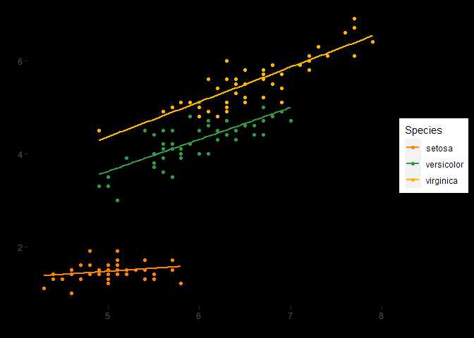

The asn package provides functions to use the brand identity of the American Society of Nephrology (ASN) in data visualizations made in either ggplot2 or highcharter. It also provides some helper functions:
-
pct_chg()andpct_norm()calculate percentage changes from either previous values or the first value in a series -
pct_fun()returns a summary count table for a vector including the percentage breakdowns in a easily readable format -
get_labs()extracts the label attributes from an object. This is designed to pull the questions from the column names from a data frame extracted byhavenfrom Qualtrics SPSS .sav files -
select_all()counts the number of unique responses to “Select All” questions which are separated across columns in Qualtrics data
The original inspiration for the package came from Dr. Simon Jackson’s blog post: https://drsimonj.svbtle.com/creating-corporate-colour-palettes-for-ggplot2. It’s highly recommended reading and the scale_*_asn_ramp() functions are copied from it. However, I didn’t want to always use interpolated colors (created by colorRampPalette) so I “borrowed” Matt Dancho’s approach from his tidyquant package, viewable at https://github.com/business-science/tidyquant/blob/master/R/ggplot-scale_manual.R for the scale_*_asn() functions.
Creation of this package was heavily informed by R Packages (2e) by Hadley Wickham and Jenny Bryan available at https://r-pkgs.org/.
Installation
You can install the development version of asn from GitHub with:
# install.packages("devtools")
devtools::install_github("ASNDataAnalytics/asn")Example
To use ASN for visualizing data in ggplot2:
library(asn)
library(ggplot2)
ggplot(
iris,
aes(
x = Sepal.Length,
y = Petal.Length,
color = Species
)
) +
geom_point() +
geom_smooth(
method = "lm",
se = FALSE
) +
scale_color_asn(palette = "dark_mode") +
theme(
panel.background = element_rect(color = "#000000", fill = "#000000"),
plot.background = element_rect(color = "#000000", fill = "#000000"),
panel.grid = element_blank()
)
And a similar application in highcharter (not shown)
library(highcharter)
library(asn)
highchart() |>
hc_add_series(
data = iris,
type = "scatter",
hcaes(
x = Sepal.Length,
y = Sepal.Width,
group = Species
)
) |>
hc_add_theme(
asn_theme
)